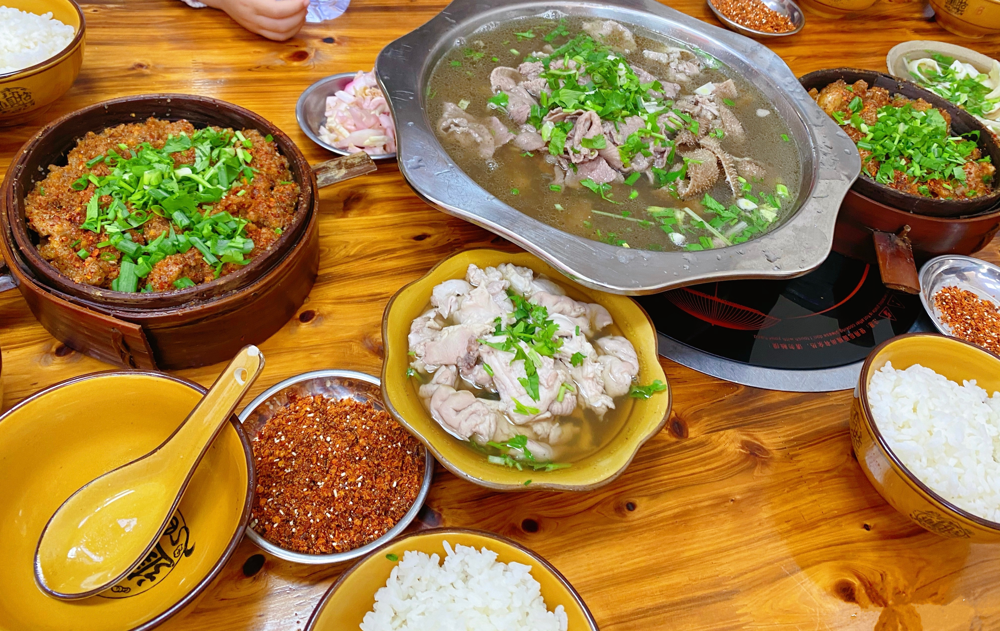
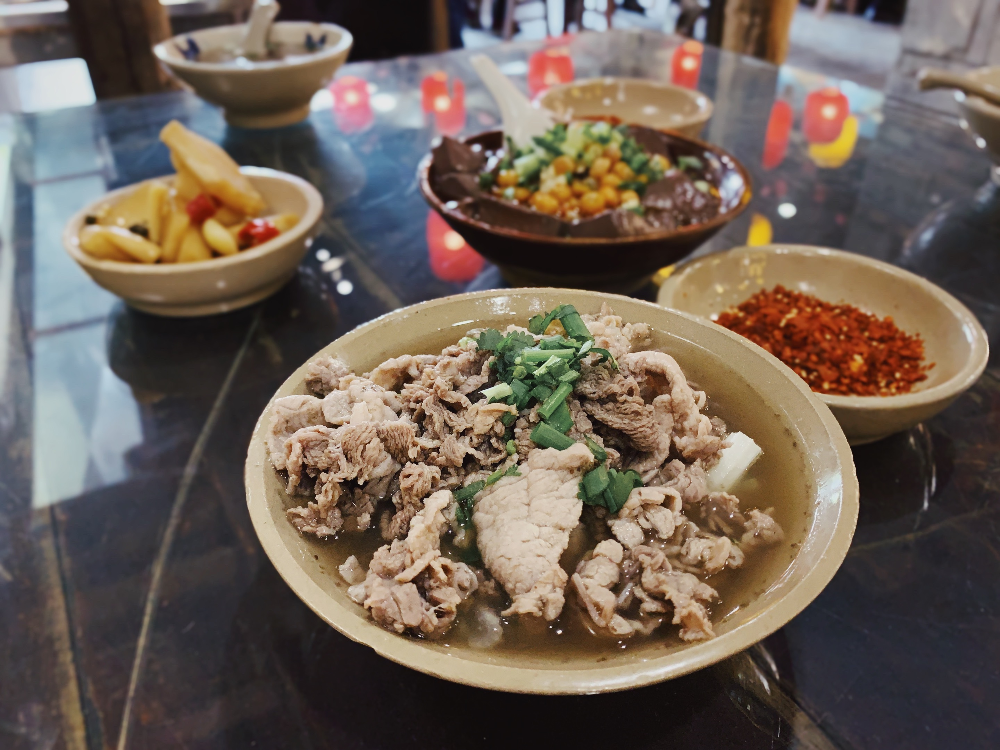

翘脚牛肉是乐山的一种传统名小吃，具有汤汁醇厚、味美鲜香的特点，因为其中加入了多种中药材，所以还有强身健体、驱寒等各种功效，老少皆宜。

乐山作为著名的旅游城市，除了有峨眉山、乐山大佛等享誉中外的各种名胜古迹以外，还有人人都喜爱的各种美食。对于游客们来说，翘脚牛肉是来到乐山必须尝一尝的美食，但对于乐山本地人来说，翘脚牛肉是他们生活中最常见的一种食物。

翘脚牛肉的手艺是从祖辈上下来的，大部分精力都耗在了这锅小小的翘脚牛肉里，无数的学生、工作者、老人们都曾在这里端起碗喝汤，放下碗生活。精心熬制出来的高汤里堆放着牛肉以及各种牛杂，一把香菜一把小葱再加一把青芹，汤的鲜味和牛杂的香味就彻底被激发出来了，夹起一片牛肉裹上一层细细的辣椒面，入口先辣后香，其中滋味只有吃到的人才能知道。

经过近百年发展演变，跷脚牛肉已成为川内颇具盛名的美食，更被列入乐山市非物质文化遗产名录。它防病治病的药膳功能、“以脏补脏”的中医原理，大大提升了这道地方名食的品味和档次。特别是经过后人对跷脚牛肉汤锅多次对比调配后，在传统汤味的基础上更合理地趋于科学营养，并逐渐形成汤鲜味美、牛杂细嫩、滋补强身、美容养颜、吃法多样等五大特色。 百年历史，三代演变。跷脚牛肉汤锅已成为乐山源远流长的地方名食。